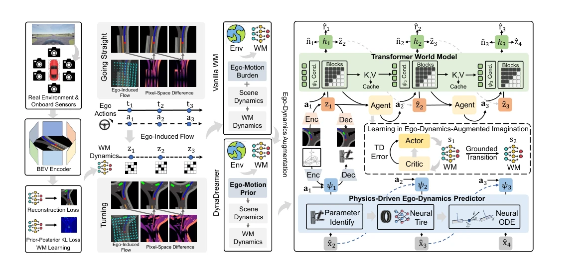
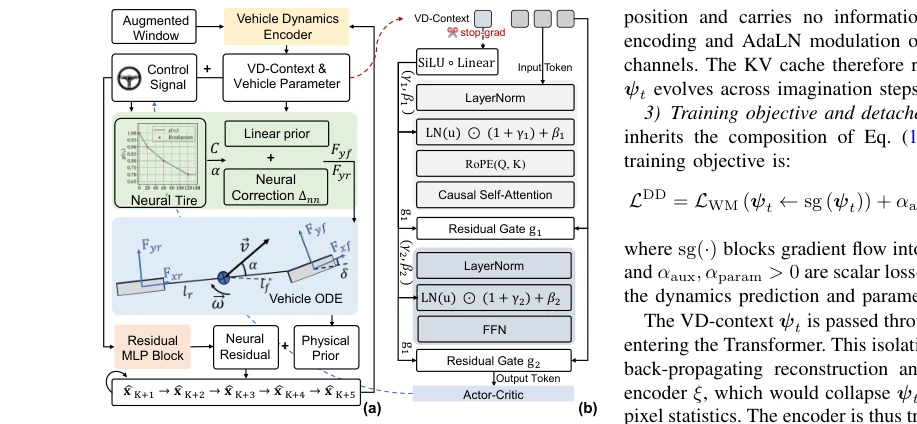
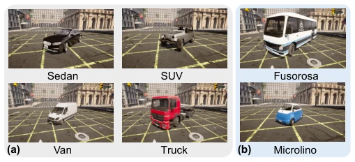
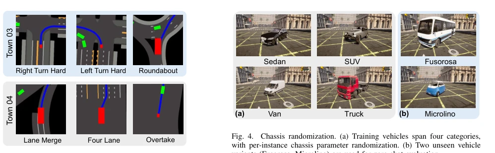
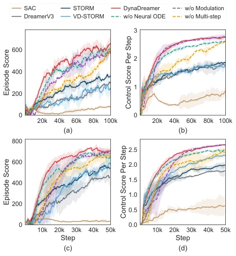
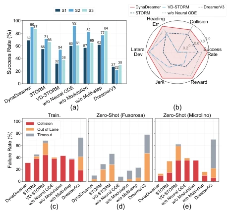
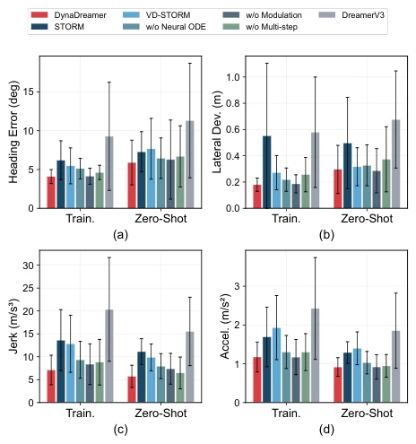
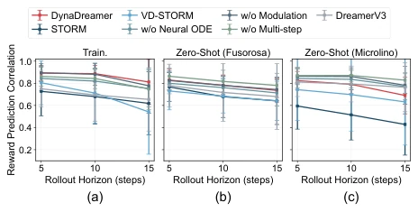
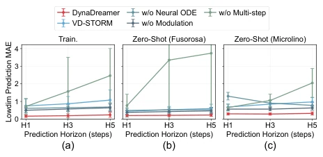
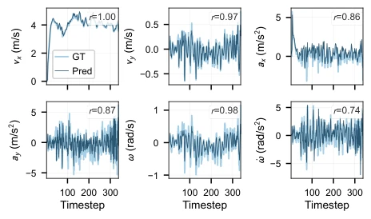

This paper provides a 'physical cheat' for autonomous driving world models (WM). Under traditional BEV representation, WM must struggle to infer from pixels whether the ego vehicle moved, wasting computational resources on solving ego motion, causing scene modeling to naturally degrade. DynaDreamer's approach is clever, directly extracting chassis dynamics parameters as priors and feeding them to the Transformer, equivalent to telling the model: "Don't guess, it is the car moving, not the world moving." Zero-shot cross-chassis adaptation is even more of a highlight; it can drive even with an unseen bus, saving retraining. However, this method strongly relies on the authenticity of physical parameters in the simulator; whether it can be this accurate on real vehicles remains questionable, as PhysX differs significantly from real tire friction coefficients. Overall, combining physical priors with WM is a good path, but do not expect it to be deployed directly on real vehicles; first, let the cars in the simulator run more realistically.
In end-to-end autonomous driving, reinforcement learning (RL) based on world models (WM) can efficiently imagine trajectories, but has a fatal flaw under bird's-eye view (BEV) representation: ego vehicle motion and environment dynamics are entangled. Existing works such as DreamerV3 [10] and STORM [26] mainly focus on pixel reconstruction, ignoring the physical causality of ego vehicle actions and chassis dynamics on observation deformation. This leads WM to infer ego motion a posteriori from warped observations, wasting capacity, and different chassis (e.g., sports car vs. bus) executing the same actions produce different deformations, resulting in extremely poor generalization. Although literature [17]-[25] attempted decoupling, most did not feedback dynamics signals to WM prior/posterior distributions, or did not bind identifiable physical parameters. Therefore, an explicit dynamics prior is urgently needed to decouple the WM burden from ego motion to scene dynamics, achieving cross-chassis zero-shot adaptation.
The overall process is divided into three stages: dynamics encoding, WM modulation, and imagination rollout. First, the physics-aware Neural-ODE encoder extracts dynamics context $\psi_t$ and chassis parameters $\hat{\theta}_v$ from ego vehicle state history, including neural tire model and bicycle ODE, ensuring physical consistency. The encoder adopts a two-stage weight sharing strategy, guiding from nominal parameters to real parameters. Second, $\psi_t$ is injected into the Transformer WM's prior and posterior distributions via AdaLN modulation; RoPE position encoding maintains orthogonality to avoid information pollution, ensuring KV cache reusability. Finally, in the imagination stage, the ODE predictor updates $\psi_t$ online, and context synchronization is maintained through modulating the KV cache; termination samples freeze the context to prevent pollution. During training, $\psi_t$ is isolated via stop-gradient to prevent pixel gradients from destroying physical priors; auxiliary loss $L_{aux}$ and parameter identification loss $L_{param}$ ensure physical interpretability. This design enables WM to focus on scene dynamics while ego motion is handled by the physical model, achieving a closed loop between physics and pixels, significantly reducing prediction entropy and KL divergence.
Based on the CarDreamer platform [34] using the CARLA simulator [35], tests were conducted in Town03 (city) and Town04 (highway). The training set includes 17 chassis variants, while zero-shot testing uses the bus Fusorosa and the microcar Microlino. Baselines include SAC, DreamerV3 [10], STORM [26], etc. Metrics cover success rate, collision rate, BEV reconstruction, etc. Results show DynaDreamer's success rate in city/highway scenarios improved by 28%/61% compared to STORM, with a zero-shot cross-chassis advantage reaching 73%. Ablation experiments prove that Neural-ODE and AdaLN modulation are crucial; performance drops significantly after removal. This work verifies the effectiveness of physical priors in improving WM sample efficiency and generalization, showing robust performance especially on unseen chassis.
其他图片Other Figures

Fig. 1. Overview of DynaDreamer. In egocentric BEV WMs, the ego vehicle’s motion induces a dominant flow field across the observation, inflating both the reconstruction loss and the prior–posterior KL divergence. DynaDreamer replaces this implicit ego-motion burden with an explicit ego-motion prior grounded in identifiable chassis physics, confining the WM to the scene dynamics beyond ego-motion. A physics-informed neural-ODE encoder-decoder extracts the ego-dynamics context ψt, which conditions the Transformer WM via AdaLN modulation and is propagated through imagination via a modulated KV cache.

Fig. 2. Architectures of (a) the physics-informed Neural-ODE encoder- decoder and (b) the VD-context-modulated Transformer block. (a) An aug- mented K-step window of ego states and actions is encoded into the ego- dynamics context (VD-context) ψt; the dynamics predictor is driven by a neural ODE to roll out future ego states. (b) Each Transformer sub-block is wrapped with an AdaLN layer whose scale, shift, and gate are produced from a stop-gradient ψt, while RoPE keeps position encoding orthogonal to the modulation channel.

Fig. 4. Chassis randomization. (a) Training vehicles span four categories, with per-instance chassis parameter randomization. (b) Two unseen vehicle variants (Fusorosa, Microlino) are used for zero-shot evaluation.

Fig. 3. Task-diversified CarDreamer: urban scenario in Town03 and highway scenario in Town04. The BEV images demonstrate the WM inputs: four semantic layers are rendered and channel-stacked into a BEV image.

Fig. 5. Training curves on Town03 (Urban, a-b) and Town04 (Highway, c-d). Solid lines: baselines; dashed lines: ablation variants. Shaded regions denote standard deviation across three seeds.

Fig. 6. (a) Success rates across three evaluation conditions. (b) Radar chart normalizing six performance dimensions to [0, 1]. (c)-(e) Failure mode breakdown for S1, S2, and S3, respectively.

Fig. 7. Comparison of lateral deviation, heading error, jerk, and speed across methods (Pooled Zero-Shot, S2+S3).

Fig. 8. Rollout reward correlation at horizons H5, H10, H15 across three evaluation conditions.

Fig. 9. Low-dimensional state prediction: overall prediction MAE at horizons H1, H3, H5.

Fig. 13. DynaDreamer low-dimensional state prediction versus ground truth, with Pearson correlation r annotated per state.